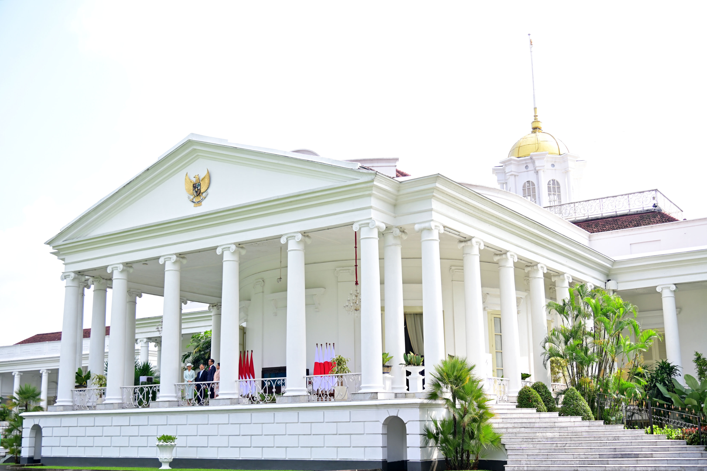
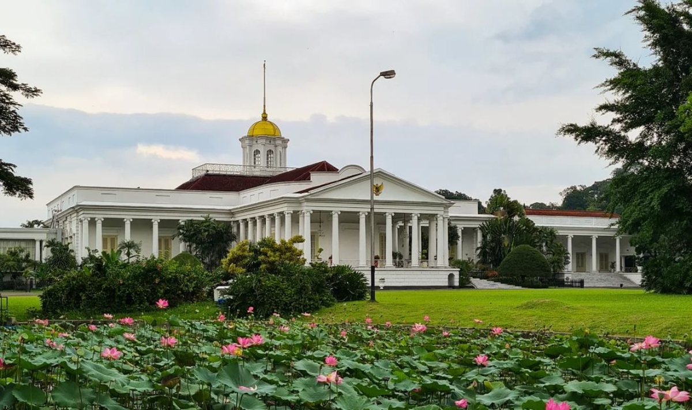

Sejarah
Bogor merupakan salah satu kota bersejarah di Indonesia. Fakta sejarah Kota Bogor sangat banyak sebab meliputi sejumlah masa, mulai dari masa kerajaan hingga masa penjajahan Belanda dan Jepang.
Kerajaan Tarumanagara

Pada awal abad ke-5 masehi, Kota Bogor merupakan pusat kerajaan Tarumanagara dengan raja yang bernama Purnawarman
Kerajaan Sunda
Kerajaan Sunda yang memiliki ibukota di Pajajaran diyakini terletak di Kota Bogor, dan menjadi pusat pemerintahan Prabu Siliwangi yang dinobatkan pada 3 Juni 1482.
Istana Bogor



Istana Bogor merupakan salah satu dari enam istana Presiden Republik Indonesia yang memiliki keuniakan tersendiri dikarenakan aspek historis, kebudayaan, dan fauna nya. Salah satunya adalah keberadaan rusa-rusa yang
didatangkan langsung dari Nepal dan tetap terjaga dari dulu sampai sekarang.
Wisata
Bogor merupakan destinasi wisata yang menawarkan keindahan alam, udara sejuk, dan suasana yang asri. Dikelilingi oleh pegunungan, kota ini menjadi tempat yang cocok untuk bersantai dan menikmati ketenangan.
Warpat Puncak
Warpat Puncak Bogor, sebuah tempat yang dijuluki sebagai surga bagi para pecinta alam. Terletak di kawasan Puncak Bogor, menawarkan keindahan alam yang mengagumkan dengan panorama perbukitan hijau, hutan pinus, kebun teh,
sungai, air terjun, dan masih banyak lagi. Tempat ini menjadi tempat yang tepat bagi mereka yang ingin menikmati keindahan alam dan menjauh dari hiruk-pikuk kota.